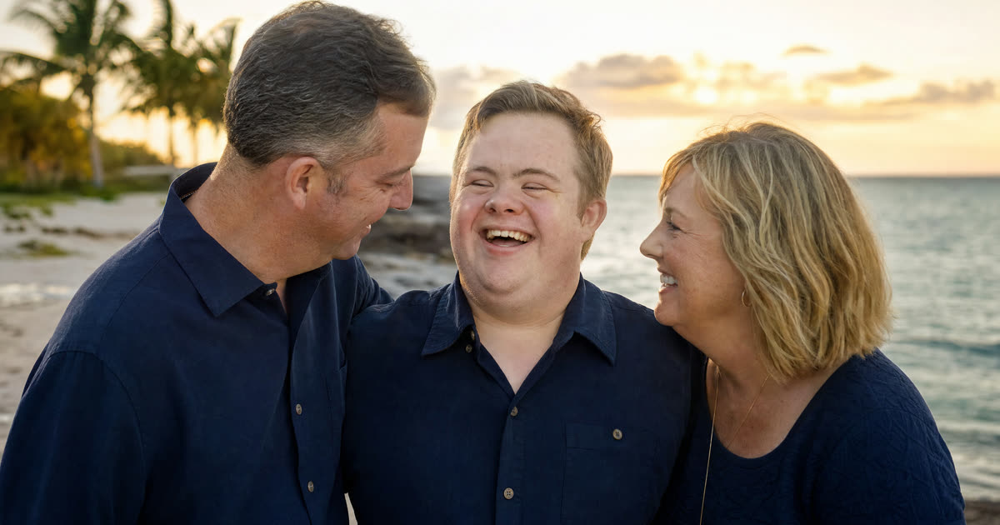

Ben's Story: From Crash to Recovery
Ben is a composite example, not an actual Truestead client, but his situation reflects one I see often. At 46, Ben was riding his motorcycle near Lakeland when a distracted driver pulled into his path. The traumatic brain injury that followed left him unable to manage his medical care or his finances for a long stretch of recovery. His sister petitioned the court, a three-member examining committee evaluated him, and a judge found him incapacitated. A plenary guardian, in Ben's case his sister, was appointed to handle both his person and his property, including a personal injury settlement that was placed into a guardianship account for his benefit.
Two years later, Ben has worked hard in rehabilitation. He lives on his own, manages his own bills, and his neurologist believes his cognitive function has returned to a level where he can resume making his own decisions. The question his family now faces is a good one: how does Ben actually get his rights back?
Have this exact situation? Talk it through with a Florida attorney — the 20-minute consultation is free.
Book Free Consult or call (888) 388-8445The Suggestion of Capacity: How Restoration Begins
Florida guardianship is a court process under Chapter 744, Florida Statutes, used when a judge finds a person incapacitated and less restrictive tools will not adequately protect them. When circumstances change, the law also provides a clear path back. Under F.S. § 744.464, any interested person, including the ward himself, may file a document called a suggestion of capacity.
The suggestion of capacity must state that the ward is now capable of exercising some or all of the rights that were removed. For Ben, this could be filed by Ben personally, by his sister as guardian, by his treating physician, or by another family member who believes he has recovered. Once filed, the statute requires the court to give the matter priority and move it forward promptly on the court's calendar, rather than letting it sit behind other business.
The Medical Exam: Building the Evidence
A suggestion of capacity is not just a family's opinion. The court must appoint a physician to examine the ward, and that physician has a limited window, generally around 20 days from appointment, to file a written report with the court. This is different from the three-member examining committee used at the start of a guardianship case; restoration typically relies on a single court-appointed physician's evaluation, along with any supporting records the ward's own treating doctors provide.
For Ben, this meant his neurologist's records, updated cognitive testing, and a fresh evaluation from the court-appointed physician all became part of the record. The ward carries the burden of proof in a restoration proceeding, meaning Ben (or those advocating for him) must show by a preponderance of the evidence, more likely than not, that restoring his rights is appropriate. Ben still has the right to counsel throughout this process, just as he did when the original guardianship was established, and he can request a hearing if the evidence is contested.
Partial or Full Restoration: What the Court Can Order
One detail families often don't expect: restoration doesn't have to be all or nothing. Just as guardianship itself can be plenary or limited, restoration of capacity can restore all rights or only some of them.
- If the court finds Ben has fully recovered, it can restore all rights that were removed, ending the guardianship entirely.
- If the court finds Ben has recovered some capacities but not others, for example, he can manage daily living and medical decisions but still needs help with complex financial matters, the court can restore some rights while leaving a limited guardianship in place over the rest.
When only some rights are restored, the order must specify exactly which rights come back to the ward. The guardian then has to prepare a new guardianship report addressing only the rights that remain under guardianship, and that report is due to the court within 60 days of the order. This keeps the case focused only on what still needs oversight, rather than treating the ward as fully incapacitated when he isn't.
What Happens to the Guardian's Authority and the Accounts
Restoration doesn't just change the ward's legal status; it also triggers specific duties for the guardian. Once a ward has all rights restored (or dies, reaches adulthood out of a minor's guardianship, or a property guardianship's assets are exhausted), the guardian is required to file a petition for discharge along with a final accounting.
This final report must show what came into the guardianship, what was spent or distributed, and that the guardian faithfully carried out their duties. For Ben, this meant his sister, as guardian of the property, had to provide a full accounting of the personal injury settlement funds held in the guardianship account, showing every disbursement made for Ben's medical care, living expenses, and rehabilitation during the guardianship. If no one objects to the final report and the court is satisfied the guardian distributed the remaining assets properly, typically returning the balance of the settlement funds directly to Ben, the court approves the final report and formally discharges the guardian.
A Word on Family Guardians and Nonresident Guardians
Ben's case involved a family guardian, his sister, who had completed the court-approved training course required of non-professional guardians before her original appointment. Professional guardians, by contrast, must register with the Office of Public and Professional Guardians. These requirements matter at the start of a guardianship, but they're worth remembering during restoration too: if a limited guardianship remains in place after partial restoration, the same guardian generally continues serving under the amended scope, without needing new training unless the court orders otherwise.
It's also worth noting, for families who live out of state, that Florida law restricts who may serve as a nonresident guardian to those related to the ward within degrees specified by statute. This becomes relevant if a family needs to appoint a successor guardian while a limited guardianship remains active after partial restoration.
Frequently Asked Questions
The Truestead Takeaway
Ben's story (a composite built from patterns I see in practice, not an actual client) shows that guardianship in Florida is not always a permanent state. When a ward's condition genuinely improves, Chapter 744 provides a structured way back to independence, starting with a suggestion of capacity, moving through a court-ordered medical exam, and ending with either partial or full restoration of rights. If a guardian's authority is fully restored, that guardian still owes the court a final accounting before being discharged, particularly important when a settlement or other significant assets were held for the ward's benefit. If your family is watching a loved one recover and wondering whether guardianship still fits their needs, or whether it's time to explore restoration, the right next step is a conversation with a Florida attorney who can review the medical picture and the guardianship record together.
Sources
- Florida Statutes, Chapter 744, Section 464 (Restoration to Capacity), Florida Legislature (flsenate.gov)
- Florida Statutes, Chapter 744, Section 521 (Termination of Guardianship), Florida Legislature (flsenate.gov)
- Florida Statutes, Chapter 744, Section 527 (Final Reports and Application for Discharge), Florida Legislature (flsenate.gov)
- Florida Rules of Civil Procedure, Rule 5.680 (Termination of Guardianship), July 26, 2021
Have a child turning 18? Get the free 18 & Protected packet — the legal documents every Florida 18-year-old needs.
Get the Free PacketTalk to a Florida Attorney
Every family’s situation is different. Schedule a consultation with Arthur Simpson, Esq. to review your plan and your options under Florida law.
Schedule a Consultation →This article is for general informational purposes only and does not constitute legal advice, nor does reading it create an attorney-client relationship. Florida estate, elder, probate, and real estate law are fact-specific and change over time. Consult a licensed Florida attorney about your individual circumstances. Arthur Simpson, Esq. is licensed to practice law in the State of Florida. Attorney advertising.
Talk to a Florida Attorney — Free 20-Minute Consultation
Pick a time below. No obligation, no pressure — just answers.